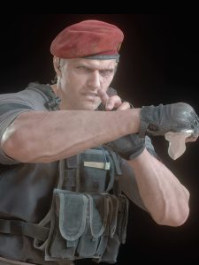

Jack Krauser
Jack Krauser é um personagem complexo e multifacetado na série Resident Evil. Originalmente um soldado das Forças Especiais dos Estados Unidos, Krauser se tornou um mercenário e antagonista em Resident Evil 4. Ele é conhecido por sua habilidade excepcional em combate, incluindo o uso de armas de fogo e técnicas de luta corpo a corpo. Krauser também possui uma história de traição, tendo abandonado sua equipe durante uma missão crítica. Sua lealdade é questionável, e ele frequentemente trabalha para seus próprios interesses, o que o torna um adversário perigoso para o protagonista Leon S. Kennedy. A presença de Krauser na narrativa adiciona tensão e conflito, tornando-o uma figura memorável na série.